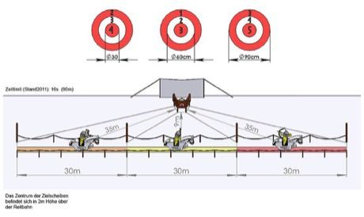
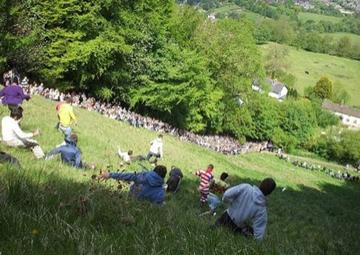

Home / Classical Worlds / Northern and Eastern Europe
Playable heritage gameMounted Archery Course
Also known as Lovasíjászat
An archer rides a straight 90 metre track and shoots at round targets set beside it, drawing and loosing the bow on the move. The course is run against the clock, and each ring of a target is worth more points the closer it lies to the centre.


How to play
- Press and hold to draw the bow; the gauge fills as the draw is completed.
- The crosshair sways with the rhythm of the ride. Release when it sits just ahead of a passing target, because the arrow needs a moment to arrive.
- Nine arrows make a run.
Rules at a glance
- The five rings of a target score 5 in the centre, then 4, 3, 2 and 1 at the edge.
- A short draw drops the arrow lower, so always draw fully.
- The arrow lands where the crosshair was at release, after a short flight; a miss scores nothing.
About the tradition
Archery from horseback was a skill of the horse-riding peoples of the Eurasian steppe. In Hungary it was revived as a sport in the late twentieth century, with courses of about ninety metres and targets set to the side of the track.
Origins
Usually placed in the era of Classical Worlds (about 1000 BCE to 500 CE), although its exact origins are uncertain, within the cultural world of Northern and Eastern Europe.
Credits
- Game design: World Heritage Games (original)
- Photo: Benjamin Diepolder, CC BY-SA 3.0, source on Wikimedia Commons
- Text: CC BY-SA 4.0, World Heritage Games.
Sources

Get the app
Mounted Archery Course is one of 18 sports and skill games in the Sports & Skill of the World app for iPhone, iPad and Android. Submitted to the App Store and Google Play; in review. Store links appear here the day it goes live. One app, many traditions, no account needed.
More games to play

Ring Tilting
Croatia · Dexterity and skill gamesPlay preview · in the Sports & Skill of the World app
String Marionette Theatre
Czechia · Performance and storytellingPlay preview · in the Story & Theatre of the World app
Celtic knot weave
Ireland +1 · Crafts and makingPlay preview · in the Textile Crafts of the World app


More from Hungary

Cimbalom
Hungary · Musical instruments
Kalocsa floral painting
Hungary · Crafts and makingHungarian dominoes
Hungary · Board and table games